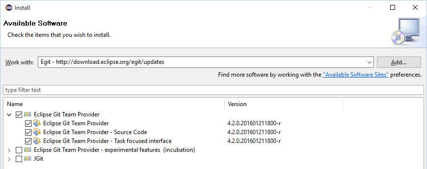
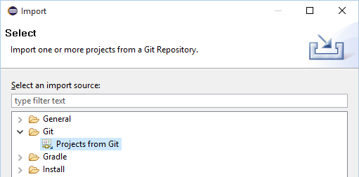
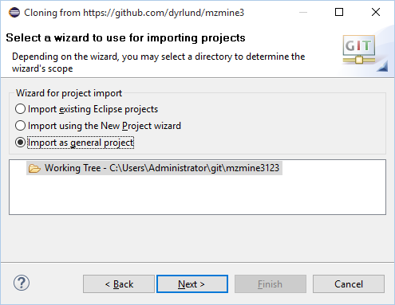
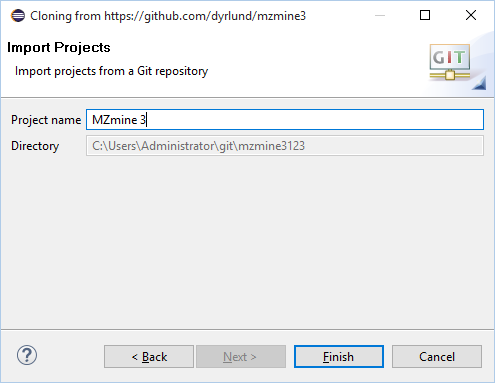
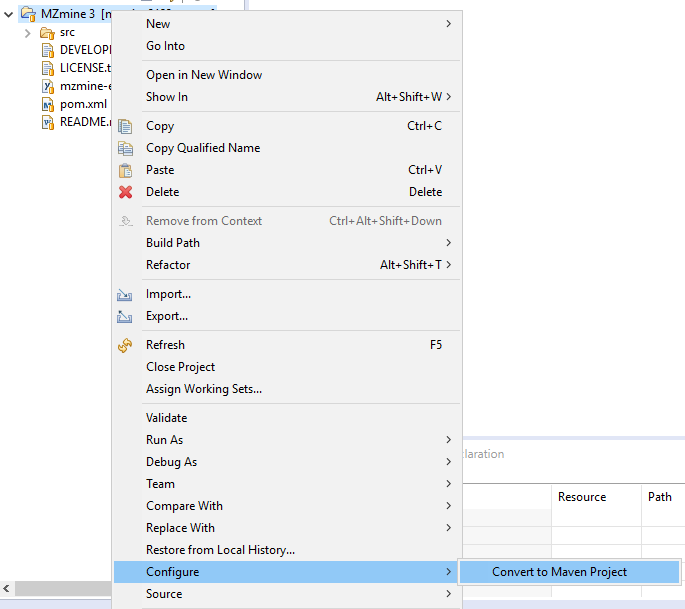
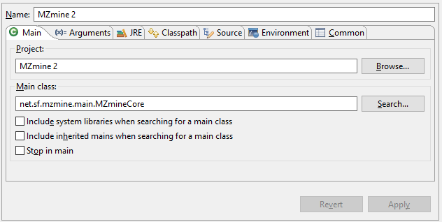
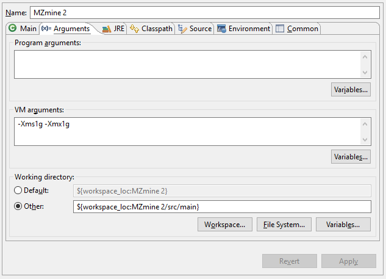
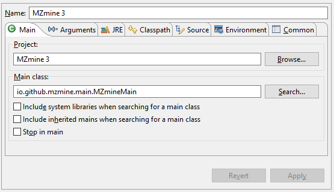
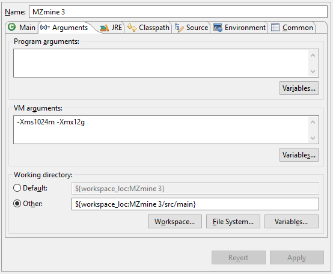
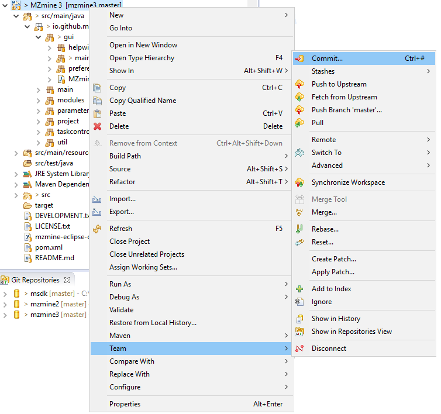

MZmine development tutorial using Eclipse IDE
In order to start developing modules for MZmine, you will need to install a basic Java development environment (IDE). This tutorial will demonstrate how to setup the Eclipse IDE, but any other development platform can be used as well.Step 1: Install Eclipse
Go to Eclipse.org and download and install the latest version of the "Eclipse IDE for Java Developers" for your OS.Note: This tutorial was written using Eclipse Mars (4.5), but the procedure should basically be the same if you use any other version.
Step 2: Add EGit support to Eclipse
After starting Eclipse, go to the menu "Help" and select "Install New Software". Click on the "Add..." button in the top right corner to add a new repository with the following information - see more here:
After the list of available software is updated from the site, select the "Eclipse Git Team Provider" item and install it.

Step 3: Fork the repositories
Make a copy of the repositories you want to work with on GitHub - see this article. This will allow you to freely experiment with changes without affecting the original projects.Depending on what project you want to work on you will need to fork these repositiories:
MZmine 2: MZmine 2
MZmine 3: MZmine 3 and MSDK
Step 4: Download the source codes from GitHub
In Eclipse, choose the menu item "Import" under the "File" menu and select "Project from Git" and then select "Clone URI".
Enter the url to your copy of the repository and enter your username and password for GitHub under authentication.

On the "Branch Selection" screen, import all the branches you want to work with. If you are new then you will work with the master branch.
On the "Local Destination" screen accept the default settings.
After the files have been downloaded, select to import the new project as a general project and enter a project name:


Step 5: Configure your project in Eclipse
MZmine 2 and MZmine 3 are using the Maven tool for building and tracking external dependencies. Please right click on your project and select "Convert to Maven Project" undet the "Configure" menu. Eclipse will then download all the dependencies and build the source code. Note: If you are planning on working with the MSDK repository then after converting your MSDK project to a Maven Project, right click on the project and select "Import". Now select "Existing Maven Projects" under "Maven". In the next window, select all projects and click on the finish button.
Step 6: Setup debug configurations
Click on the bug icon and choose "Debug Configurations...". Here you can add new debug configurations for your project. The settings will depend on which software you will be working with. Please fill in the settings as shown below for MZmine 2 or MZmine 3.MZmine 2:


MZmine 3:


Step 7: Contributing your changes
If you are new to GitHub then please see this tutorial to get an understanding of the workflow on getting your changes merged into the projects main repository.You contribute with your changes by commiting them to your local repository on GitHub. This is done by right clicking on your project and selecting "Team" and then "Commit...". On you repository on GitHub you can then make a pull request to have your changes merged with the main repository.
